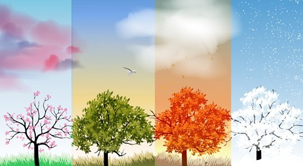
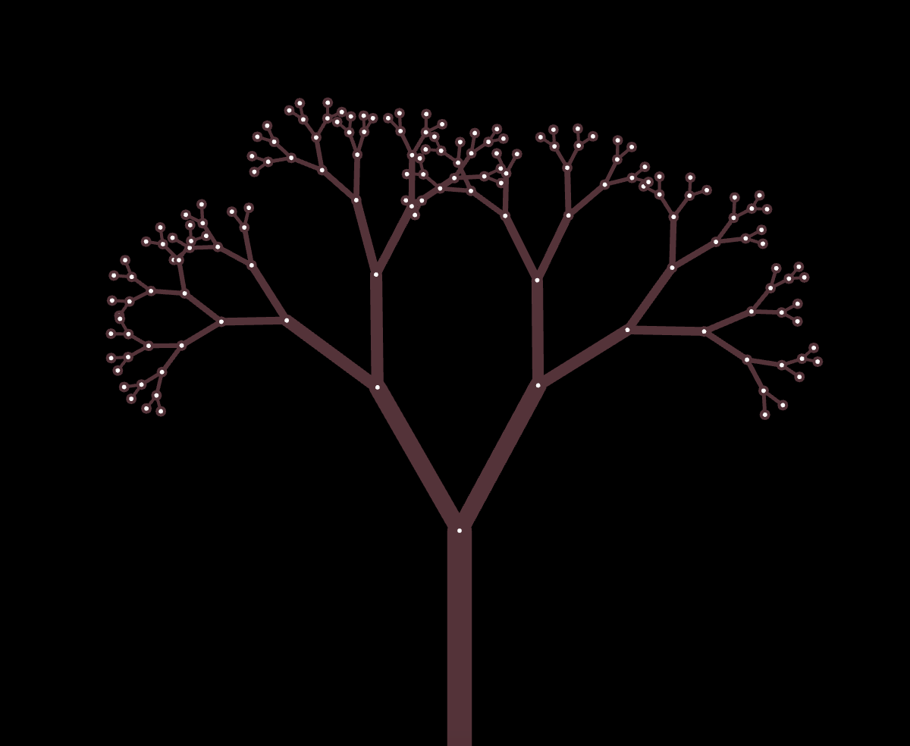
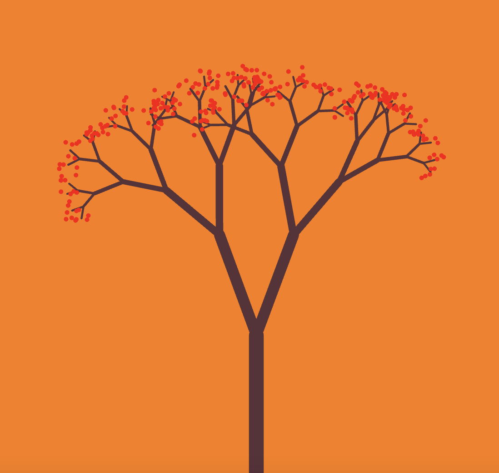

Grammers and Text Art
Imitate
For this experiment I wanted to experiment with using random generation to create a tree in which its leaves are made out of text. I was inspired by the open processing example, “Tree Roots” by Mascaria and Fractal Trees. With this I wanted to create a tree that would have a background change colors to represent the changing of the seasons. This would involve having the branches with color changing leaves, change colors after a certain amount of time has passed. I also want to take inspiration from this image to have the background change colors. 
Integrate
The first step I want to implement would be creating the tree as this would be the focus of the piece. Before implementing any text I wanted to make sure I could randomly generate different style branching trees. For now I'll just be using regular lines to create my tree. Following the examples of branching I was able to create a function that would create a multilevel tree. I wasn’t happy with the final results as it didn’t really look like a tree. I wanted to create shorter branches so it looked a bit more clustered near the base of the tree. So with a bit of perlin noise and some recursion I was able to create a more realistic tree.
My next approach would be tackling the different changing backgrounds to showcase the changing of the seasons. I wanted each season to last around 10 seconds. I found the example “Fading Random Background Colors” by falsesugar. I thought this was the perfect example as it showed a smooth transition of colors instead of a harsh and abrupt color change. I used the website “HTML Color Codes” so I could get the exact RGB colorways I wanted as my target colors.
Innovate
With my tree and transitioning background done, the next part of the experiment is to create leaves at the end of each branch. However, these would not be normal leaves. Rather they will be a scramble of random letters that would change colors with the season as well. Before adding any text I wanted to at least get some cluster dots at the end of the branches. I know if I can get some form of leaves in the right location that I could easily turn these leaves into letters. I created a function to handle the implementation of the leaves.
I ended up with this as my starting point for the leaves. Next I wanted to get these clusters to fill up the tree a bit more. I had a bit of difficulty getting the leaves to populate downward, so I ended up just creating more layers of clusters to make the tree look fuller. At this point I want to turn these leaves into letters. This should be pretty simple as I am just changing the drawing from dots to letters. I was able to quickly do this and it ended up making the tree look more full. With the letters implemented I now wanted to get them to change colors with the season. This would be pretty much copy and paste of how I change the background according to the season. With the leave colors done there are a few final touches I would like to add in. I wanted to add in fading text so you could see what season was currently displayed. This just meant creating a timer for the fading text.
Reflection
I completed this experiment independently. I started out pretty quickly with getting the tree all set up but hit some slow points once I implemented the letters in as leaves. Switching my dots to letters was pretty simple as I just used a random letter generator to swap them out, but since I was adding everything as clusters it felt almost impossible to modify the letters individually. I originally wanted to add a downward velocity effect to the letters, so it would look like the leaves were falling out of the tree. However, I quickly discovered that the clusters don’t act like other objects. I end up just settling with the clusters of letters changing colors with the season. Besides this, I was able to successfully complete every other goal I had in mind for this experiment.
Results
Watch And Enjoy
Reset Page For New Tree